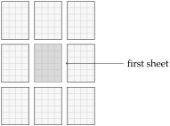

Chapter 1 Long division at the desk
Before it named a machine, computer was a job. The computer had a chair and a pencil, and could quite reasonably ask for a day off. At the Langley laboratory in 1935, women worked as computers, calculating from experimental data, plotting results, and checking the work before it went back to engineers. They developed methods as well as using them.
1
NASA’s historical account, “When the Computer Wore a Skirt: Langley’s Computers, 1935–1970,” describes the group. In 1935 the laboratory belonged to NACA.
Imagine taking the next shift. Someone has left a division on the desk: \(123\) divided by \(8\text{.}\) There is room for one eight in the first twelve, so a one goes above the two and four remains below. Bringing down the three makes forty-three. Five eights fit there, leaving three.
The answer so far is fifteen, with three left over. Write the decimal point above the bar. We may continue the original number as \(123.000\ldots\text{,}\) and bringing down its first zero turns the remaining three into thirty. The next answer square is empty.
A practiced computer might put three there immediately. We want to leave enough on the desk for a person who does not see that answer in advance. This was the human situation Alan Turing took as his starting point: someone following definite rules with marks on paper. We will arrive at our rules by finding out what this particular worker needs to do next.
Take eight from thirty. Twenty-two remains. Take eight again: fourteen. Once more: six.
\begin{equation*}
30\longrightarrow22\longrightarrow14\longrightarrow6.
\end{equation*}
Each arrow is a subtraction. The next attempt, \(6-8\text{,}\) fails to leave a nonnegative remainder. Three eights fitted; a fourth did not. The answer digit is three, and six is what we must keep for the next round.
This way of choosing a digit is laborious when the divisor is eight. Replace it with \(237\text{,}\) however, and ask how many copies fit into \(1538\text{.}\) The multiplication table we carry in our heads has suddenly become less forthcoming. Repeated subtraction still works: \(1301,1064,827,590,353,116\text{.}\) Six successful trials, and then \(116\) cannot supply another \(237\text{.}\) The scratch work has done the choosing.
For our eights, leave a counting square beside the work. Write zero there before the first trial; after each success, change it to the next digit. The successive marks are zero, one, two, three. A failed trial leaves the count alone. We will copy it into the waiting answer square once the scratch work is settled.
There are two useful endings to a subtraction here: yes, with a remainder to keep, and no, which tells us to stop trying. In ordinary arithmetic we might write \(-2\) for \(6-8\text{.}\) In this division we need the refusal. The familiar subtraction has become a question whose answer sends the pencil somewhere else. To see how the paper can carry that choice, we need to look inside one column.
Addition gives us a particularly clear view. Stack \(587\) above \(468\text{,}\) lining up their units. Seven and eight make fifteen: write five below the line and carry one to the left. That one joins eight and six, making fifteen again. Another five below, another one to the left. Five, four, and the carried one make ten.
\begin{equation*}
\begin{array}{r@{\,}rrrr}
&\scriptstyle1&\scriptstyle1&\scriptstyle1&\\
&&5&8&7\\
+&&4&6&8\\\hline
&1&0&5&5
\end{array}
\end{equation*}
We get \(1055\text{,}\) and the page has done part of the remembering. Each carried one waits just above the column that needs it. The worker can forget it until arriving there. That is a modest service for a piece of paper to perform, but try doing a long addition while someone asks you for a telephone number.
On graph paper, give each digit its own square. Rest a finger in the carry row, above the column being worked. The upper digit is one square down, the lower digit two squares down, and the answer three squares down. This arrangement travels with the finger as it moves left. The following pictures show the same calculation at successive columns; the shaded square is where attention rests.
Obey the first picture’s directions and the second picture is what you have. The carry above the eight has come from the preceding column. Obey the second and the pencil reaches the five.
Suppose the first sheet ended just left of the five. The carried one would be asked to wait off the edge. Put another sheet against that edge, matching the grid lines, and the missing column becomes available. The move is still one square left. We can extend a side, a corner, and eventually the edges of the enlarged patch too. Eight sheets around the first give the beginning of such a desk:

The gaps in the picture let us see the sheets; their squares join on the desk. We allow a supply that never runs out, though any particular stage uses only finitely much. The worker can begin without unfolding an infinite sheet before breakfast.
The directions beside our pictures cover four columns. To handle another addition, collect the rest of the small facts in two tables: one for a column without an incoming carry, one for a column with one. The upper mark chooses a row, the lower mark a column. Their entry gives the answer digit and the carry to leave on the left. Blank gets a row and column of its own. For \(12+3\text{,}\) the tens column contains one above blank; its entry writes one. Only when both number squares are blank have both numbers ended. Then write any remaining carry and finish.
Ten digits and blank give eleven possible marks in each number square. Each table has \(11\times11=121\) entries; the two tables together cover \(242\) cases. An addition with a million digits will be lengthy, but no column will ask for a twelfth kind of mark. The full tables are in Appendix A.
We can give the repeated actions short written names. Let
A keep our place in the upper number, B in the lower, C in the answer, and D in the carry row. For now they do what four fingers would do. Write(C,5) puts five in the answer square. Move(C,0,-1,0) moves that place one column left: the three numbers say to change page by zero, column by minus one, and row by zero. The five stays where it was written.
To select the seven-and-eight entry, inspect
A; if it holds seven, inspect B for eight. A written If makes that choice, and Goto says where to continue on the instruction sheet. Here is the entry we have already watched, after the carry square has been found blank:
pair78: If(A,7) Goto check8 Goto other-pairs check8: If(B,8) Goto write5 Goto other-pairs write5: Write(C,5) Move(D,0,-1,0) Write(D,1) Move(A,0,-1,0) Move(B,0,-1,0) Move(C,0,-1,0) Goto next-column
The names before colons label lines. If a test succeeds, take its jump; otherwise take the next line. Thus a different upper digit sends us to
other-pairs, where the rest of the table is tested. With seven and eight, we reach write5. The writes and moves then produce precisely the change between the first two pictures. At next-column, the one we just carried selects the other addition table.
This is one branch, with two exits into the rest of the sheet. Every other entry, including blank, can be written out in the same way. The large program in the appendix is mostly this unglamorous thoroughness: the sheet has remembered all the small facts.
Return to the first trial, \(30-8\text{.}\) In the units column, zero cannot supply eight. Borrow a ten: ten minus eight leaves two, and only two of the original three tens remain. They go below the line too.
\begin{equation*}
\begin{array}{r@{\,}rr}
&\scriptstyle2&\scriptstyle10\\
&3&0\\-& &8\\\hline&2&2
\end{array}
\qquad 30-8=22.
\end{equation*}
Instead of crossing out the three, we can leave the original digits alone and write a one above the tens column. Here that one means “subtract one extra: the column on the right has borrowed from this one.” We have kept the school calculation and moved its reminder into a separate row.
Subtraction now has two tables too. Without an incoming borrow, zero above eight writes two and sends a borrow left. With an incoming borrow, three above blank writes two and sends none. These are the two entries used in our trial:
\begin{equation*}
\begin{array}{ccc|cc}
\text{upper}&\text{lower}&\text{borrow in}&\text{write}&\text{borrow left}\\\hline
0&8&\text{blank}&2&1\\
3&\text{blank}&1&2&\text{blank}
\end{array}
\end{equation*}
Blank contributes no amount in this column, but it still has to be recognized. The next move left meets two blanks with no borrow remaining. This is the yes-ending: the scratch answer is twenty-two. Each table entry can be expanded into the same tests, writes, moves, and jumps as our addition entry.
The trial \(6-8\) follows a different route. Its units entry writes eight and asks the next column to supply a ten. On moving left the worker meets two blanks, with the borrow unpaid. That entry sends the worker to the no-ending. The temporary eight below the line is rejected; it is not the answer to the subtraction. We have found the refusal in the marks themselves.
Equality takes the other exit. For \(8-8\text{,}\) write zero and pass no borrow. Two blanks then finish successfully: one eight fits exactly. In a division that success must be counted before the following trial, \(0-8\text{,}\) refuses. Otherwise every exact multiple would lose one from its answer digit.
The two subtraction tables have the same \(242\) cases as the addition tables, including the two endings. A borrow can travel through as many columns as necessary. In \(1000-1\text{,}\) three zeros in succession write nine and pass it left; the one finally pays it. The written answer is \(0999\text{.}\) There is a little tidying left, and we will need to remember a place to do it safely.
The answer square after \(15.\) has been waiting while we worked elsewhere. A finger could save it, but our fingers have begun to acquire other obligations. Write its address on a card. Call the original work surface page zero, its answer row zero, and the square holding the first answer digit column zero. Columns increase to the right and rows upward. The square after the point is then page zero, column three, row zero:
\begin{equation*}
\texttt{OUT}:\quad(0,3,0).
\end{equation*}
The name
OUT stays on the card. The three numbers tell us where to write next. Such a card is a place card. The letters we used in the addition can hold places in exactly this way. Negative row and column numbers take us below or left of the chosen starting square.Take a fresh work surface for each trial. Its page number changes; the original answer card does not. A page here includes any sheets joined to extend its grid. Joining a sheet at the edge creates more columns or rows on that page; turning to a fresh scratch page gives us a separate blank surface. The two acts solve different problems: space to continue, and space to try something without spoiling what we have.
Put the trial \(30-8\) on page one, with its answer ending at column one, row zero. Keep twenty-two there and try \(22-8\) on page two. Its answer is fourteen. A card at the start of that answer reads \((2,0,0)\text{;}\) a second at its units reads \((2,1,0)\text{.}\) We can leave those cards in place while copying fourteen to page three for the next trial.
Let
A start at the one on page two and B at the empty square \((3,0,2)\text{.}\) Read one, write one at B, and move both cards one column right. Read four, write four, and move both again. A now points to blank, so the copying ends. The new fourteen occupies row two on page three. For this short journey, ten digit branches suffice: the one-branch says Write(B,1), the four-branch says Write(B,4), and each makes the same two moves and returns to the tests. The blank branch goes on to the next job.
To align the eight under fourteen, start at the first digit of fourteen, walk right to blank, then step left to the four. Save that units place. An eight one row below it is aligned correctly. For a divisor with several digits, save its units place too and copy leftward, one column at a time, beginning under the saved units of the upper number. Both numbers then keep their ordinary order, however different their lengths.
Saving a place has a short instruction of its own:
Place(U,A) copies the address on A onto U. It copies three numbers on a card, leaving the marks on the graph paper alone. Now A may walk away; Place(A,U) brings it back. This is how a place survives an excursion to another row or another page.
The third trial succeeds, leaving six. The fourth fails. Here is what is kept after each trial; all scratch answers end at column one, row zero on their respective pages.
| page | trial | count | remainder kept |
| 1 | \(30-8=22\) | 1 | 22 on page 1 |
| 2 | \(22-8=14\) | 2 | 14 on page 2 |
| 3 | \(14-8=6\) | 3 | 6 on page 3 |
| 4 | \(6-8\text{:}\) no | 3 | 6 on page 3 |
The no-ending leaves both the count and the accepted remainder cards alone. Six remains at \((3,1,0)\text{.}\) A rejected answer can sit on page four as long as it likes; no card will promote it to the remainder. We have made the trial reversible by doing its writing somewhere else.
Before accepting a successful answer, remove the zeros its leading columns may have produced. Our \(14-8\) first leaves \(06\text{;}\) the walk removes the zero and retains the six. But \(1234-1234\) leaves \(0000\text{,}\) and indiscriminately erasing zeros would erase the answer. Save the units place on
U. At the successful ending, the working answer card has reached the blank just left of all the answer digits. Move it one square right to begin the tidying walk. If its place equals U, finish immediately. If the digit is nonzero, finish too. Otherwise erase the zero, move right, and repeat these tests.
\begin{equation*}
000\underline0\ \longrightarrow\ 00\underline0\
\longrightarrow\ 0\underline0\ \longrightarrow\ \underline0.
\end{equation*}
The underline marks the square that is kept. In this display the initial blanks are omitted; the final zero never moves. The test
IfSame(A,U) Goto finished compares the addresses on the two cards. It prevents us from taking the last digit away. For \(098\text{,}\) the walk stops at nine; for \(1002\text{,}\) it stops at once. Interior zeros are never touched.The coordinates on a card may grow, but changing one by one uses the addition and subtraction already on the desk. A fixed number of cards can keep our places through an arbitrarily long calculation.
The counting square contains three.
OUT still records \((0,3,0)\text{.}\) The digit-copying branch for three puts it there, and Move(OUT,0,1,0) advances the card. The answer has become \(15.3\text{,}\) with its next place saved.

The remainder card brings us back to the six on page three. Bring down zero beside it to make sixty. Clear the counting square to zero and return to the first trial instruction. There is no new kind of work to invent for the second decimal place: seven successful subtractions leave four. The next zero makes forty, five eights leave zero, and the answer is \(15.375\text{.}\)

Once the remainder is zero, each new round rejects its first attempt to subtract eight. Its count stays zero, which is copied to the answer. The sheet continues \(15.375000\ldots\text{.}\) We usually stop writing such an answer, but the directions still know what to do.
The repeated route is a loop. A backward jump to an instruction takes place on the fixed sheet; the answer card continues forward on the graph paper. Returning to the beginning of the directions does not return the desk to its earlier condition. There are more digits, more scratch work, and a new place waiting to receive the next result.
We can start the whole division by the same method. Take a nonnegative integer to divide and a positive integer as divisor. Begin with remainder zero and bring down the supplied digits from left to right. With \(123/8\text{,}\) the first brought-down digit is one; no eight fits, so the count is zero. Suppress that initial zero in the integer answer. The next digit makes twelve, then the next makes forty-three, giving the one and five with which we began. After the input ends, write the decimal point and keep bringing down zeros. If the integer answer has not begun at all, write \(0.\text{,}\) as in \(2/8\text{.}\) Beyond the point, keep every answer digit, zeros included.
One counting square is enough because a round cannot have more than nine successes. With divisor eight the old remainder is at most seven. Bringing down even nine makes only seventy-nine, less than ten eights. In general the old remainder is smaller than the divisor: that was what the last failed trial told us. Multiply it by ten and add a digit at most nine, and the result is still smaller than ten copies of the divisor. At most nine subtractions can succeed; the next must refuse. A positive divisor is essential. Subtracting zero would give a very busy pencil and no progress whatever.
Each trial crosses finitely many columns, and each copying walk crosses finitely many digits. There are finitely many trials per round. The worker therefore reaches every particular answer place after a finite wait. For \(1/7\text{,}\) the resulting expansion is \(0.142857142857\ldots\text{;}\) there is always another place to reach, although reaching any specified one is a finite job.
Appendix A gives the full addition, subtraction, and long-division programs. Its arithmetic keeps the carry or borrow in one square, replacing the reminder after each column. Its division also saves some copying: two cards read the accepted remainder and the divisor where they already lie, while another writes the trial answer on fresh paper. The same column facts are used. These economies change where the worker looks, without changing which subtraction succeeds or which digit reaches the answer.

Alan Turing (1912–1954)
In 1936 Turing began his analysis with squared paper, comparing it to a child’s arithmetic book. He considered what symbols a person observes, what changes they make, and where their attention moves. Only then did he simplify the arrangement to a strip of squares. Our instructions make those familiar little acts explicit.
2
Turing, “On Computable Numbers,” section 9, pp. 249–251.
Turing’s table looks at a symbol and a state, the current stage of the directions. An entry specifies what to write, whether to move left or right, and which state comes next. For instance:
| state | symbol | write | move | next state |
a |
0 | 1 | right | b |
a |
1 | 0 | left | a |
Our worker can follow any finite table of this form. State
a selects one part of the sheet, and a test selects the entry. It writes, moves, and jumps to the part for the next state, just as we arranged for seven plus eight.
A program is a finite sheet of these instructions, using a fixed finite collection of marks. Its writes, moves, saved places, tests, and jumps have all had jobs in our division. The final instruction,
Halt, means stop. Every jump must name a line on the sheet. Unless an instruction jumps or halts, the worker takes the following line. The ingenuity belongs in making the sheet. Following it does not require sharing its inventor’s understanding.
Pause before writing three after \(15.\text{.}\) The papers contain the accepted six and the rejected trial;
OUT still records \((0,3,0)\text{.}\) Taken together, the marks, cards, and next instruction form a configuration: everything another worker needs to resume. After the write, the next configuration has three in that square and the next line ready. After the move, the three stays put and OUT records \((0,4,0)\text{.}\)
Record successive configurations and we have a trace of the calculation. Each one has a finite description: a list of the written squares and their marks, the places on the cards, and the next instruction. A trace is a sequence of such finite sequences. Checking a step means checking what its instruction allows to change, and that everything else has stayed put. A four in the waiting answer square fails the check, however confidently it was written.
The division has given us a way to continue and a way to inspect what has been done. The page before us still contains only a finite beginning. Those few digits already give information about the whole number, even before the worker reaches the next place.
![Runestone Academy logo]()
![MathJax logo]()